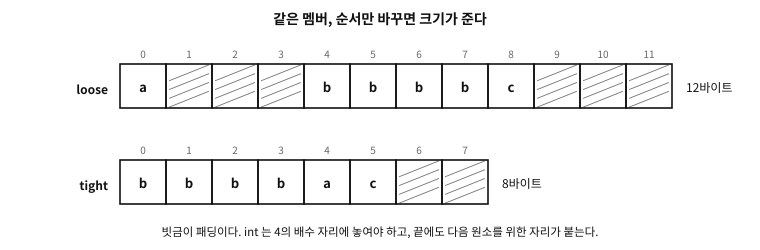
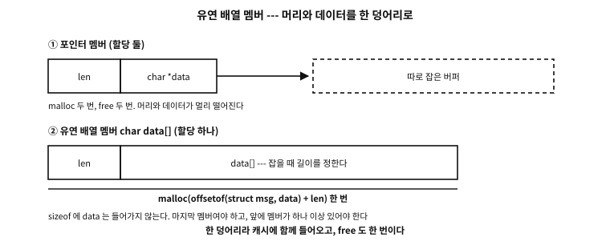
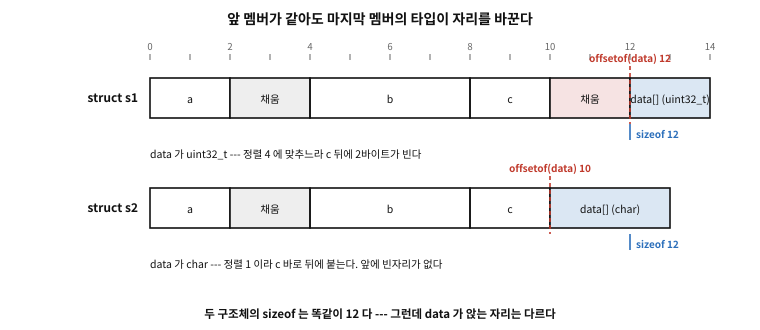

47 구조체
먼저 알아야 할 것
돌아보기
24장에서 “타입은 값의 집합 + 연산의 약속”이라 했고, 지금까지 쓴 타입은 전부 미리 있는 것들(int, double, char, 포인터)이었다. 그러면 프로그래머가 새 타입을 만든다는 것은 무슨 뜻인가?
답. 기억의 모양을 새로 정하고 이름을 붙이는 일이다. “정수 둘이 나란히 있는 덩어리를 점(point)이라 부르겠다”고 선언하면, 그 순간부터 point는 변수를 만들고 함수에 넘기고 배열로 늘어놓을 수 있는 어엿한 타입이 된다. 39장의 배열이 같은 타입의 반복이었다면, 구조체(struct)는 다른 타입의 묶음이다 — 그리고 그 묶음에 이름이 붙는 순간, 프로그램의 어휘가 늘어난다.
이 장의 필요성과 맥락
-> 도 배열 멤버도 설명할 수 없다. 8부가 7부 바로 뒤인 것은 우연이 아니다.이 장이 끝나면
.와 ->), 그리고 구조체가 값으로 오가는 방식까지.이 장에서 답할 질문
- 구조체도 객체인가? 멤버도 객체인가?
- 그러면 항상 큰 멤버부터 적어야 하는가?
- 포인터가 “0으로 채워진다”와 “널이 된다”는 같은 말 아닌가?
struct point라고 매번struct를 붙이는 것이 번거롭다 — 줄일 수 없는가?- 구조체 안에 자기 자신을 멤버로 넣을 수 있는가 — 리스트 같은 것을 만들려면 필요할 것 같은데.
- 그러면 함수가 이런 구조체를 값으로 돌려주면, 받는 쪽의 배열은 덮어씌워지는가 아니면 그대로 남는가?
47.1 구조체란 무엇인가 — 한 대상의 여러 속성#
배열이 「같은 것이 여럿일 때」의 답이었다면(39장), 구조체는 「한 대상에 서로 다른 것이 여럿 딸려 있을 때」의 답이다.
학생 한 명을 생각해 보자. 학생에게는 이름이 있고(문자열), 태어난 해가 있고(정수), 점수가 있다(실수). 이 셋은 타입이 다르므로 배열 하나에 담을 수 없다. 지금까지 배운 것만으로 학생 서른 명을 다루려면 배열을 속성마다 하나씩 만들어야 한다.
const char *names[30];
int years[30];
double scores[30]; /* i 번 학생 = names[i], years[i], scores[i] */이것을 평행 배열(parallel arrays)이라 부른다. 돌아는 가지만, 「i 번 학생」이라는 하나의 대상이 세 곳에 흩어져 있고 그것을 묶는 것은 같은 번호를 쓴다는 약속뿐이다. 그 약속은 쉽게 깨진다. 점수 순으로 정렬하면서 이름을 함께 옮기는 것을 잊으면 짝이 어긋나고, 속성이 하나 늘면 배열을 하나 더 만들어 모든 함수의 매개변수에 끼워 넣어야 한다. 함수가 「가장 점수가 높은 학생」을 돌려주려 해도, 함수는 값을 하나만 돌려줄 수 있다.
구조체(structure)는 이 흩어진 것들을 하나의 타입으로 묶는다.
struct student {
const char *name;
int year;
double score;
};
struct student cls[30]; /* i 번 학생 = cls[i] --- 한 덩어리 */시연이 두 방식을 나란히 놓는다.
examples/structs/why_struct.c
#include <stdio.h>
/* 구조체 없이: 같은 학생의 정보가 세 배열에 흩어져 있다 */
static const char *names[3] = {"Ada", "Ken", "Bjarne"};
static int years[3] = {1815, 1943, 1950};
static double scores[3] = {97.5, 88.0, 91.0};
/* 구조체로: 한 학생의 정보가 한 덩어리다 */
struct student {
const char *name;
int year;
double score;
};
static struct student best(const struct student *v, size_t n)
{
struct student top = v[0];
for (size_t i = 1; i < n; i++)
if (v[i].score > top.score)
top = v[i]; /* 통째로 대입 --- 세 멤버가 함께 */
return top; /* 값 셋을 한 번에 돌려준다 */
}
int main(void)
{
puts("[1] parallel arrays: one student, three places");
/* 점수만 정렬하다 이름을 같이 옮기는 것을 잊으면 짝이 어긋난다 */
double t = scores[0]; scores[0] = scores[1]; scores[1] = t;
printf("%s: %.1f <- the score moved, the name did not\n",
names[0], scores[0]);
(void)years;
puts("\n[2] a structure keeps one student in one piece");
struct student cls[3] = {
{.name = "Ada", .year = 1815, .score = 97.5},
{.name = "Ken", .year = 1943, .score = 88.0},
{.name = "Bjarne", .year = 1950, .score = 91.0},
};
struct student tmp = cls[0]; cls[0] = cls[1]; cls[1] = tmp;
printf("%s: %.1f <- name and score moved together\n",
cls[0].name, cls[0].score);
puts("\n[3] a function can return all three at once");
struct student b = best(cls, 3);
printf("best: %s (%d) %.1f\n", b.name, b.year, b.score);
puts("\n[4] members lie in declaration order");
printf("sizeof(struct student) = %zu bytes\n", sizeof(struct student));
printf("&b == &b.name : %d\n", (void *)&b == (void *)&b.name);
printf("&b.name < &b.year < &b.score : %d\n",
(void *)&b.name < (void *)&b.year
&& (void *)&b.year < (void *)&b.score);
return 0;
}
실행 결과
[1] parallel arrays: one student, three places
Ada: 88.0 <- the score moved, the name did not
[2] a structure keeps one student in one piece
Ken: 88.0 <- name and score moved together
[3] a function can return all three at once
best: Ada (1815) 97.5
[4] members lie in declaration order
sizeof(struct student) = 24 bytes
&b == &b.name : 1
&b.name < &b.year < &b.score : 1
첫 묶음은 평행 배열에서 점수만 맞바꾼 결과다. Ada의 이름 옆에 Ken의 점수가 붙었다 — 컴파일러는 아무 말도 하지 않는다. 둘째 묶음은 구조체를 통째로 맞바꾼 것이라 이름과 점수가 함께 움직였다. 셋째 묶음은 함수가 학생 한 명, 곧 값 셋을 한 번에 돌려준 것이다. 구조체가 주는 것을 정리하면 이렇다.
| 주는 것 | 그래서 |
|---|---|
| 한 대상이 한 덩어리 | 대입 한 번에 모든 속성이 함께 옮겨진다. 짝이 어긋날 수 없다 |
| 이름 붙은 속성 | s.score 처럼 이름으로 부른다. 배열의 번호와 달리 뜻이 코드에 남는다 |
| 새 타입 | 변수를 만들고, 함수에 넘기고, 함수에서 돌려주고, 배열로 늘어놓을 수 있다 — int 처럼 |
| 정해진 배치 | 멤버가 적은 순서대로 기억에 놓인다. 파일 형식·통신 규약·하드웨어 레지스터처럼 바이트의 모양이 정해진 자료를 그대로 옮겨 적을 수 있다(조건은 뒤에서 본다) |
표 47.1 — 구조체가 주는 것
27장의 갈래에서 구조체는 집합체 타입이자 파생 타입이었다. 이 장은 그 갈래 표에서 구조체가 놓인 칸의 속이다.
47.2 엄밀한 정의 — 배열과 나란히 놓고 읽기#
표준은 배열을 정의한 바로 그 문단에서 구조체와 공용체(union)를 잇달아 정의한다. 셋을 나란히 읽으면 차이가 낱말 하나씩으로 갈린다.
“ 배열 타입은 연속으로 할당된 비어 있지 않은 객체 집합을 기술한다 — 원소 타입이라 부르는 특정 멤버 객체 타입의 것들이다. …
구조체 타입은 차례로 할당된(sequentially allocated) 비어 있지 않은 멤버 객체 집합을 기술한다(그리고 어떤 경우에는 불완전 배열 하나도). 멤버 각각은 이름이 붙을 수 있고, 타입이 서로 다를 수 있다.
공용체 타입은 겹쳐지는(overlapping) 비어 있지 않은 멤버 객체 집합을 기술한다. …1 ”
| 배열 | 구조체 | 공용체 | |
|---|---|---|---|
| 놓이는 방식 | 연속(빈틈 없음) | 차례로(순서는 지키되 빈틈은 있을 수 있다) | 겹쳐서(모두 같은 자리) |
| 구성 요소의 타입 | 모두 같다 | 서로 다를 수 있다 | 서로 다를 수 있다 |
| 구성 요소를 부르는 법 | 번호(a[i], 계산할 수 있다) | 이름(s.x, 계산할 수 없다) | 이름 |
| 크기 | 원소 크기 × 개수 | 멤버 크기의 합 이상(빈자리 때문) | 가장 큰 멤버 이상 |
| 다루는 장 | 39장 | 이 장과 48장 | 49장 |
표 47.2 — 정의의 낱말로 가른 배열·구조체·공용체
「차례로」가 무엇을 보장하고 무엇을 보장하지 않는지는 표준이 구조체 선언을 설명하는 자리에서 정확히 적는다.
“ 구조체 객체 안에서 비트 필드가 아닌 멤버들은 … 선언된 순서대로 증가하는 주소에 놓인다. 구조체 객체를 가리키는 포인터를 알맞게 변환하면 그 첫 멤버를 가리키고, 그 반대도 성립한다. 구조체 객체 안에 이름 없는 채움(padding)이 있을 수 있지만, 맨 앞에는 없다.2 ”
보장은 셋이고, 보장하지 않는 것이 하나다.
- 순서는 지켜진다. 컴파일러는 멤버의 자리를 바꾸지 않는다. 첫 절 시연(
why_struct.c)의 넷째 묶음이name<year<score의 주소 순서를 확인했다. - 첫 멤버는 구조체와 같은 주소에 있다. 맨 앞에 채움이 없기 때문이다(넷째 묶음의
&b == &b.name). 이 보장 위에 「구조체의 첫 멤버로 다른 구조체를 넣어 상속처럼 쓰는」 C의 오래된 관용구가 선다. - 멤버 사이와 끝에는 빈자리가 있을 수 있다. 그래서 크기가 멤버 크기의 합과 다를 수 있다 — 두 절 뒤 「
sizeof의 첫 놀라움」의 주제다. - 빈자리의 양은 보장하지 않는다. 얼마나 비울지는 구현이 정한다. 「바이트의 모양이 정해진 자료」를 구조체로 옮겨 적을 때 조심해야 하는 이유이고, 48장와 61장에서 다시 만난다.
정의의 「비어 있지 않은」도 배열과 같다. 멤버가 하나도 없는 struct empty {}; 는 표준 C가 아니고 (gcc는 확장으로 받아 크기 0을 준다), 「불완전 배열 하나」는 이 장 뒷부분에서 볼 유연 배열 멤버다.
문. 구조체도 객체인가? 멤버도 객체인가?
답. 둘 다 객체다(36장의 정의 — 「실행 환경 안의 데이터 저장 영역으로, 그 내용이 값을 나타낼 수 있는 것」). struct student b; 에는 객체가 넷 있다. 구조체 b 하나와 그 안의 멤버 b.name·b.year·b.score 셋이다. 배열과 같은 구조다 — 큰 객체가 작은 객체들을 품는다. 다른 점은 멤버를 번호가 아니라 이름으로 부르고, 그래서 「i 번째 멤버」처럼 계산해서 고를 수 없다는 것이다. 멤버를 계산으로 고르고 싶어지면 그것은 배열이 필요하다는 신호다.
47.3 선언, 초기화, 접근#
examples/structs/point.c
#include <stdio.h>
struct point {
int x;
int y;
};
struct point moved(struct point p, int dx, int dy)
{
return (struct point){ .x = p.x + dx, .y = p.y + dy }; /* 복합 리터럴 */
}
int main(void)
{
struct point a = { .x = 3, .y = 4 }; /* 지정 초기화 */
struct point b = moved(a, 10, -1);
printf("a = (%d, %d)\n", a.x, a.y); /* 값으로 접근: . */
printf("b = (%d, %d)\n", b.x, b.y);
struct point *p = &b;
printf("p->x = %d\n", p->x); /* 포인터로 접근: -> */
printf("sizeof(struct point) = %zu\n", sizeof(struct point));
return 0;
}
실행 결과
a = (3, 4)
b = (13, 3)
p->x = 13
sizeof(struct point) = 8
선언은 struct point { int x; int y; }; — 중괄호 안의 각 항목을 멤버(member)라 부른다. 이 선언 자체는 기억을 잡지 않는다. “이런 모양의 타입이 있다”는 정의일 뿐이고, struct point a;처럼 써야 변수가 생긴다.
point 는 태그(tag)다 — 구조체의 이름이고, 일반 식별자와 다른 별도의 이름 공간에 살며 (63장), 그래서 struct point point; 도 합법이다.
★ 태그가 같은 두 선언이 같은 타입인가는 오래 까다로운 물음이었다. C17 까지는 서로 다른 번역 단위에 있을 때만 호환을 따졌고, 한 파일 안에서 같은 모양을 두 번 적는 것은 아예 재정의라 오류였다. C23 이 규칙을 넓혀, 같은 태그에 멤버가 하나씩 짝지어 맞으면 같은 번역 단위 안에서도 호환으로 친다(§6.2.7). 매크로가 같은 구조체를 두 번 펼치는 자리처럼, 그전까지 요령으로 피하던 문제가 줄었다.
초기화는 시연처럼 멤버 이름을 적는 지정 초기화(designated initializer, C99)를 권한다 — { .x = 3, .y = 4 }. 순서에 기대는 {3, 4}보다 읽기 좋고, 멤버가 늘거나 순서가 바뀌어도 안전하다. 적지 않은 멤버는 0으로 채워진다.
접근은 두 표기다 — 값에는 점(a.x), 포인터에는 화살표(p->x). 화살표는 사실 (*p).x의 줄임이다(36장의 역참조 + 점). 포인터로 구조체를 다루는 일이 압도적으로 흔해서 전용 표기를 둔 것이다.
복합 리터럴 — 시연의 (struct point){ .x = ..., .y = ... }는 “그 자리에서 이름 없는 구조체 값을 하나 만드는” 표기다(C99). 반환값이나 인자로 구조체를 즉석에서 넘길 때 요긴하다.
47.4 sizeof의 첫 놀라움 — 멤버 크기의 합이 아니다#
구조체를 만들고 크기를 물어보면 대개 예상이 빗나간다.
examples/structs/sizeof_first.c
/* 멤버 크기를 더한 값과 구조체의 크기는 왜 다른가 — 배치를 직접 인쇄한다. */
#include <stddef.h>
#include <stdio.h>
/* 같은 멤버, 순서만 다르다 */
struct loose { char a; int b; char c; }; /* 작은 것 사이에 큰 것 */
struct tight { int b; char a; char c; }; /* 큰 것부터 */
int main(void)
{
printf("sum of the member sizes: %zu + %zu + %zu = %zu bytes\n",
sizeof(char), sizeof(int), sizeof(char),
sizeof(char) * 2 + sizeof(int));
printf("\nstruct loose { char a; int b; char c; }\n");
printf(" sizeof = %zu, _Alignof = %zu\n",
sizeof(struct loose), alignof(struct loose));
printf(" offsetof(a) = %zu, offsetof(b) = %zu, offsetof(c) = %zu\n",
offsetof(struct loose, a), offsetof(struct loose, b),
offsetof(struct loose, c));
printf("\nstruct tight { int b; char a; char c; }\n");
printf(" sizeof = %zu, _Alignof = %zu\n",
sizeof(struct tight), alignof(struct tight));
printf(" offsetof(b) = %zu, offsetof(a) = %zu, offsetof(c) = %zu\n",
offsetof(struct tight, b), offsetof(struct tight, a),
offsetof(struct tight, c));
/* 배치를 그림처럼 그려 본다: 멤버가 차지한 칸은 이름으로, 빈자리는 . 으로 */
puts("\nlayout cell by cell (numbers are offsets, dots are padding):");
for (size_t i = 0; i < sizeof(struct loose); i++) {
char mark = '.';
if (i == offsetof(struct loose, a)) mark = 'a';
else if (i >= offsetof(struct loose, b)
&& i < offsetof(struct loose, b) + sizeof(int)) mark = 'b';
else if (i == offsetof(struct loose, c)) mark = 'c';
printf("%c", mark);
}
printf(" <- loose (%zu bytes)\n", sizeof(struct loose));
for (size_t i = 0; i < sizeof(struct tight); i++) {
char mark = '.';
if (i < sizeof(int)) mark = 'b';
else if (i == offsetof(struct tight, a)) mark = 'a';
else if (i == offsetof(struct tight, c)) mark = 'c';
printf("%c", mark);
}
printf(" <- tight (%zu bytes)\n", sizeof(struct tight));
/* 배열로 늘어놓으면 차이가 곱해진다 */
printf("\nwith a million elements: loose %zu MiB, tight %zu MiB\n",
sizeof(struct loose) * 1000000u / (1024 * 1024),
sizeof(struct tight) * 1000000u / (1024 * 1024));
return 0;
}
실행 결과
sum of the member sizes: 1 + 4 + 1 = 6 bytes
struct loose { char a; int b; char c; }
sizeof = 12, _Alignof = 4
offsetof(a) = 0, offsetof(b) = 4, offsetof(c) = 8
struct tight { int b; char a; char c; }
sizeof = 8, _Alignof = 4
offsetof(b) = 0, offsetof(a) = 4, offsetof(c) = 5
layout cell by cell (numbers are offsets, dots are padding):
a...bbbbc... <- loose (12 bytes)
bbbbac.. <- tight (8 bytes)
with a million elements: loose 11 MiB, tight 7 MiB
char+int+char이니 6바이트일 것 같은데 12바이트다. 남는 6바이트는 패딩(padding) 즉 멤버 사이와 끝에 놓인 빈자리다. 앞의 표준 인용에서 「채움」이라 옮긴 것이 이것이다.

그림 47.1 — 빗금이 패딩이다. 멤버는 자기 정렬의 배수 자리에 놓이고, 구조체 끝에도 빈자리가 붙는다.
이유는 4장의 정렬이다. int는 4의 배수 주소에 놓여야 하므로 첫 char 뒤에 3바이트가 비고, 마지막 char 뒤에도 3바이트가 붙는다 — 이 구조체를 배열로 늘어놓았을 때 다음 원소의 int도 정렬을 지켜야 하기 때문이다.
규칙은 셋뿐이다.
- 각 멤버는 자기 정렬의 배수 오프셋에 놓인다.
- 구조체의 정렬은 멤버 정렬의 최댓값이다.
- 구조체의 크기는 그 정렬의 배수로 올림된다(꼬리 패딩).
그래서 멤버 순서만 바꿔도 크기가 준다. 시연의 tight은 큰 것부터 늘어놓아 12바이트를 8바이트로 줄였다. 원소 100만 개면 약 11.4 MiB와 7.6 MiB의 차이다 — 기억만 아끼는 것이 아니라 캐시에 들어가는 원소 수가 달라진다(12장).
배치를 눈으로 확인하는 도구가 <stddef.h>의 offsetof다. 시연이 그것으로 각 멤버가 몇 번째 바이트에서 시작하는지 인쇄했다. 「내 생각과 다르면 물어본다」가 이 자리의 요령이다.
문. 그러면 항상 큰 멤버부터 적어야 하는가?
답. 기본값으로 삼을 만하지만 규칙으로 삼을 것은 아니다. 읽기 좋은 순서가 더 중요한 경우가 많고(서로 얽힌 멤버를 붙여 두는 것), 구조체 하나만 만드는 자리에서는 몇 바이트가 문제 되지 않는다.
순서를 의식해야 하는 자리는 분명하다 — 같은 구조체를 아주 많이 늘어놓을 때(배열·풀·노드), 그리고 기억이 빠듯한 임베디드다. 그 밖에서는 크기를 한 번 인쇄해 보고 놀라지 않는 정도면 된다.
패딩을 없애는 장치(#pragma pack·packed)와 정렬을 올리는 장치 (alignas)는 48장에서 본다. 먼저 알아 둘 것은 그것들이 표준이 아니거나 대가가 있다는 사실이다.
47.5 통째로 0으로 — { 0 }과 { }#
「선언, 초기화, 접근」 절에서 “적지 않은 멤버는 0으로 채워진다”고 한 마디로 넘어갔는데, 이 문장은 실무에서 매일 쓰이는 관용구의 근거이므로 따로 볼 만하다.
struct config c = {0}; /* 오래된 관용구 */
struct config c = {}; /* C23 부터 — 빈 초기자 */examples/structs/zeroinit.c
/* 통째로 0으로 — { 0 } 과 C23 의 { } 는 포인터 멤버까지 널로 만든다. */
#include <stdio.h>
#include <string.h>
struct inner { int k; char *note; };
struct config {
int retries;
char *path; /* 포인터 멤버 */
double ratio;
struct inner in; /* 안에 또 포인터가 있다 */
char name[4];
};
static void dump(const char *tag, const struct config *c)
{
printf("%s retries=%d path=%s ratio=%g in.k=%d in.note=%s name[0]=%d\n",
tag, c->retries,
c->path == NULL ? "null" : "not null",
c->ratio, c->in.k,
c->in.note == NULL ? "null" : "not null",
c->name[0]);
}
static void bytes(const char *tag, const void *p, size_t n)
{
const unsigned char *b = p;
size_t zero = 0;
for (size_t i = 0; i < n; i++)
zero += (b[i] == 0);
printf("%s %zu bytes, %zu of them zero\n", tag, n, zero);
}
int main(void)
{
struct config a = {0}; /* 첫 멤버만 명시, 나머지는 기본 초기화 */
struct config b = {}; /* C23: 빈 초기자 — 객체 전체가 기본 초기화 */
dump("{0} :", &a);
dump("{ } :", &b);
/* 지정 초기화도 마찬가지다 — 적지 않은 멤버는 기본 초기화된다 */
struct config c = { .retries = 3 };
dump("{.retries=3}:", &c);
/* memset 은 '모든 비트 0' 이지 '널'이 아니다 — 이 구현에서는 같지만
표준이 같다고 보장하지 않는다. */
struct config m;
memset(&m, 0, sizeof m);
printf("is path null after memset: %s (on this implementation)\n",
m.path == NULL ? "yes" : "no");
printf("\nsizeof(struct config) = %zu, sum of member sizes = %zu - the difference is padding\n",
sizeof(struct config),
sizeof(int) + sizeof(char *) + sizeof(double)
+ sizeof(struct inner) + 4);
bytes("{0} :", &a, sizeof a);
bytes("{ } :", &b, sizeof b);
return 0;
}
실행 결과
{0} : retries=0 path=null ratio=0 in.k=0 in.note=null name[0]=0
{ } : retries=0 path=null ratio=0 in.k=0 in.note=null name[0]=0
{.retries=3}: retries=3 path=null ratio=0 in.k=0 in.note=null name[0]=0
is path null after memset: yes (on this implementation)
sizeof(struct config) = 48, sum of member sizes = 40 - the difference is padding
{0} : 48 bytes, 48 of them zero
{ } : 48 bytes, 48 of them zero
47.5.1 무엇이 보장되는가#
표준(C23 §6.7.11)은 이것을 기본 초기화(default initialization)라는 이름으로 정의한다. 명시적으로 초기화되지 않은 부분은 다음과 같이 채워진다.
| 멤버의 타입 | 무엇으로 채워지는가 |
|---|---|
| 포인터 | 널 포인터 |
| 산술 타입(정수·부동소수) | (양의 또는 부호 없는) 0 |
| 십진 부동소수 | 양의 0. 양자 지수는 구현 정의 |
| 집합체(구조체·배열·공용체) | 재귀적으로 같은 규칙을 다시 적용 |
표 47.3 — 멤버 타입별로 기본 초기화가 채우는 값
여기서 「포인터 멤버도 0 이 되는가」라는 물음에 답이 나온다 — 포인터 멤버는 널로 초기화된다. 그것도 안에 든 구조체의 포인터 멤버까지 재귀적으로 그렇다. 시연에서 path도 in.note도 널로 나오는 것이 그 확인이다.
문. 포인터가 “0으로 채워진다”와 “널이 된다”는 같은 말 아닌가?
답. 같은 결과가 되는 구현이 압도적으로 많지만, 약속의 내용이 다르다.
표준이 보장하는 것은 “널 포인터 값이 된다”이지 “모든 비트가 0이 된다”가 아니다(37장에서 본 널의 정체). 널의 표현이 모든 비트 0이 아닌 구현이 과거에 실제로 있었고, 표준은 지금도 그 여지를 남겨 둔다. 그래서 {0}·{}은 어디서나 널을 주지만, memset(&c, 0, sizeof c)는 “모든 비트 0”만 줄 뿐이다. 두 약속이 갈리는 구현에서는 후자가 널이 아니다.
부동소수도 같은 이야기다 — {0}은 값 0.0을 약속하고, memset은 비트열만 약속한다. 37장의 시연이 포인터 멤버가 있는 구조체(struct node)를 두 방법으로 비워 바이트를 나란히 인쇄한다 — 이 기계에서는 결과가 같고, 약속은 다르다. 실무의 결론은 간단하다: 구조체를 비울 때는 초기자를 쓰고, memset은 초기화가 아니라 다른 목적(바로 뒤에 볼, 패딩까지 0으로 만드는 일)일 때 쓴다.
47.5.2 {0}과 {}의 미세한 차이 — 패딩#
둘은 거의 같지만 한 자리에서 갈린다. C23은 기본 초기화되는 집합체에 대해 “모든 패딩이 0 비트로 초기화된다”고 못박는다. {}은 객체 전체가 기본 초기화의 대상이므로 멤버 사이의 빈틈까지 0이다. 반면 {0}은 첫 멤버를 명시한 초기화이므로, 기본 초기화의 대상은 나머지 멤버들이고 구조체 자신의 패딩 바이트는 그 대상이 아니다 — 값이 미지정이다.
시연에서 48바이트가 모두 0으로 나오지만, 그것은 이 구현이 그렇게 한다는 뜻일 뿐 약속이 아니다.
이 차이는 대개 무의미하지만, 구조체를 memcmp로 통째 비교하거나 파일· 네트워크로 바이트째 내보낼 때는 갑자기 중요해진다. 그럴 때의 규칙은 이렇다.
- 값의 의미만 필요하다 →
{0}또는{}. - 패딩까지 0이어야 한다(비교·직렬화) → C23이면
{}, 아니면memset뒤에 필요한 멤버를 다시 대입한다.
흔한 오해. “{0}은 첫 멤버만 0으로 만든다”
아니다. {0}이 명시하는 것은 첫 멤버 하나지만, 적지 않은 나머지는 전부 기본 초기화된다(§6.7.11). 그래서 멤버가 100개여도 {0} 하나로 전부 0·널이 된다.
거꾸로 된 오해도 흔하다 — “{ .retries = 3 }처럼 일부만 적으면 나머지는 쓰레기값이다”라는 것. 역시 아니다. 지정 초기화든 순서 초기화든, 초기자가 하나라도 있으면 적지 않은 멤버는 기본 초기화된다. 시연의 세 번째 줄이 그 확인이다. 쓰레기값이 되는 경우는 초기자를 아예 쓰지 않았을 때다 (struct config c;).
플랫폼 노트. `{}`을 쓸 수 있는가
{}은 C23에서 표준이 되었다. 그 전에도 GCC와 Clang이 확장으로 받아들였지만 이식성 있는 코드는 아니었다. C17 이하를 함께 지원해야 하면 {0}을 쓰되, 첫 멤버가 구조체나 배열이면 컴파일러가 경고를 낼 수 있어서 { {0} }처럼 겹쳐 써야 하는 경우가 있다. {}은 그런 성가심이 없다는 것이 또 하나의 장점이다.47.6 구조체는 값이다#
C에서 구조체는 값처럼 다뤄진다 — 대입하면 통째로 복사되고, 함수에 넘기면 34장의 규칙 그대로 복사되어 건너가며, return으로 통째로 돌려줄 수도 있다. 「선언, 초기화, 접근」 절 시연(point.c)의 moved(a, 10, -1)이 그 확인이다: a는 그대로이고 새 값 b가 나왔다.
이 복사는 멤버를 그대로 옮겨 적는 얕은 복사(shallow copy)다. 멤버가 전부 수라면 문제가 없지만, 멤버 중에 포인터가 있으면 주소가 그대로 복제되어 원본과 사본이 같은 곳을 가리키게 된다 — 이 사실이 뒤에서 자기를 가리키는 자료를 다룰 때 결정적인 함정이 된다.
다만 실무에서는 큰 구조체를 값으로 주고받는 대신 포인터로 넘기는 관행이 흔하다 — 복사 비용을 아끼기 위해서다(12장의 기억 사다리를 떠올리면 큰 덩어리의 복사가 공짜가 아님이 보인다). 읽기만 할 때는 const struct point *p처럼 const 포인터로 받는 것이 관행이다 — 24장의 const가 “이 함수는 원본을 건드리지 않는다”는 계약 표시로 일하는 것이다.
문. struct point라고 매번 struct를 붙이는 것이 번거롭다 — 줄일 수 없는가?
답. 전통적으로는 typedef로 별명을 만들어 왔다 — typedef struct point point_t;처럼. 다만 취향과 유파가 갈리는 지점이라(별명이 “이것이 구조체”라는 정보를 감춘다는 반론이 있다), 이 책은 지면에서 정체가 보이도록 struct를 붙여 쓴다. 어느 쪽이든 일관성이 중요하다.
문. 구조체 안에 자기 자신을 멤버로 넣을 수 있는가 — 리스트 같은 것을 만들려면 필요할 것 같은데.
답. 자기 자신을 값으로 담을 수는 없다(무한한 크기가 되므로). 그러나 자신을 가리키는 포인터는 담을 수 있고, 바로 그것이 연결 자료구조의 씨앗이다: struct node { int value; struct node *next; }; 이 한 줄에 36장의 포인터와 46장의 동적 메모리가 만나면 연결 리스트·트리 같은 구조가 열린다 — 이 책의 범위를 넘는 자료구조의 세계이지만, 문을 여는 열쇠가 여기 있다는 것은 알아 둘 만하다.
47.6.1 대입은 되는데 비교는 안 되는 이유#
구조체는 값이라 b = a; 한 줄로 통째로 복사된다. 그런데 a == b는 없다 — 컴파일 오류다. 왜 대입은 되고 비교는 안 되는가?
비교가 없는 것은 패딩 때문이다. 대입은 「멤버의 값들을 옮긴다」로 정의할 수 있지만, 비교는 「같은가」를 물어야 하는데 패딩의 값이 정해져 있지 않다. 같은 값을 담은 두 구조체라도 패딩에 다른 쓰레기가 있을 수 있고, 그러면 비트로 견주는 순간 「다르다」가 나온다.
흔한 오해. “그러면 memcmp로 견주면 되지 않는가”
가장 흔한 대체 시도이고, 조용히 틀린다. memcmp는 표현을 견준다 — 멤버뿐 아니라 패딩까지 본다.
48장의 시연이 이것을 실물로 보인다. 멤버가 전부 같은 두 구조체인데 memcmp가 「다르다」를 돌려준다. 반대 방향으로 틀리는 일도 있다 — 패딩이 우연히 같으면 「같다」가 나오지만, 그것은 운이지 계약이 아니다.
같은 이유로 구조체를 통째로 해시하면 안 되고(같은 값이 다른 해시를 낸다), 통째로 파일이나 네트워크에 내보내도 안 된다(48장에서 자세히 본다).
처방은 하나다 — 멤버별로 비교하는 함수를 만든다.
bool point_eq(struct point a, struct point b)
{ return a.x == b.x && a.y == b.y; }47.7 머리와 데이터를 한 덩어리로 — 유연 배열 멤버#
구조체 뒤에 길이가 정해지지 않은 데이터가 따라오는 모양은 아주 흔하다 — 메시지, 패킷, 문자열을 담은 노드. 길이가 정해진 앞쪽 멤버들을 머리(header), 그 뒤에 따라오는 가변 길이 부분을 데이터라 부른다. C99가 이 패턴을 정식으로 들여왔다.
유연 배열 멤버(flexible array member)는 구조체의 마지막 멤버로, 크기를 비워 둔 배열이다.

그림 47.2 — 머리와 데이터를 한 덩어리로 — 할당이 둘에서 하나로 준다.
그림 47.2의 위아래가 같은 자료의 두 가지 담는 법이다. 위쪽(char *data)은 머리와 데이터가 따로 놓여 malloc 도 free 도 두 번이고, 둘이 멀리 떨어져 캐시에도 따로 실린다. 아래쪽이 유연 배열 멤버이고, 한 번 잡아 한 번 놓는다.
examples/structs/flexible.c
/* 유연 배열 멤버 — 머리와 데이터를 한 덩어리로 잡는 C99 의 장치. */
#include <stdckdint.h>
#include <stddef.h>
#include <stdio.h>
#include <stdlib.h>
#include <string.h>
/* 마지막 멤버의 크기를 비워 두면 '유연 배열 멤버'다.
sizeof 에는 이 멤버가 들어가지 않는다 — 크기는 잡을 때 정한다. */
struct msg {
unsigned kind;
size_t len;
char data[]; /* ← 유연 배열 멤버 */
};
/* 잡을 크기 = 머리 + 데이터. 넘침 검사를 빠뜨리면 작은 그릇에 큰 배열이 된다. */
static struct msg *msg_new(unsigned kind, const char *text)
{
size_t len = strlen(text);
size_t need;
/* offsetof(struct msg, data) 가 sizeof(struct msg) 보다 정확하다 —
꼬리 패딩을 두 번 세지 않는다. */
if (ckd_add(&need, offsetof(struct msg, data), len)) return nullptr;
struct msg *m = malloc(need);
if (!m) return nullptr;
m->kind = kind;
m->len = len;
memcpy(m->data, text, len);
return m;
}
int main(void)
{
printf("sizeof(struct msg) = %zu <- data is not counted\n",
sizeof(struct msg));
printf("offsetof(struct msg, data) = %zu\n", offsetof(struct msg, data));
printf("alignof(struct msg) = %zu\n", alignof(struct msg));
const char *text = "hello, world!";
struct msg *m = msg_new(7, text);
if (!m) { perror("malloc"); return 1; }
printf("\nsize reserved = offsetof(data) + %zu = %zu bytes\n",
m->len, offsetof(struct msg, data) + m->len);
printf("kind = %u, len = %zu, data = \"%.*s\"\n",
m->kind, m->len, (int)m->len, m->data);
/* 머리와 데이터가 한 덩어리라 free 도 한 번이다 */
free(m);
puts("\ndifference from the old practice:");
puts(" char data[1]; <- the 'struct hack'. The size arithmetic is off by one,");
puts(" and it read past the array, outside the contract.");
puts(" char data[]; <- what C99 made official. Inside the contract.");
return 0;
}
실행 결과
sizeof(struct msg) = 16 <- data is not counted
offsetof(struct msg, data) = 16
alignof(struct msg) = 8
size reserved = offsetof(data) + 13 = 29 bytes
kind = 7, len = 13, data = "hello, world!"
difference from the old practice:
char data[1]; <- the 'struct hack'. The size arithmetic is off by one,
and it read past the array, outside the contract.
char data[]; <- what C99 made official. Inside the contract.
세 가지가 계약이다.
- 마지막 멤버여야 하고, 그 앞에 멤버가 하나 이상 있어야 한다.
sizeof에 포함되지 않는다. 시연에서sizeof(struct msg)와offsetof(struct msg, data)가 같은 값으로 나오는 것이 그 뜻이다.- 크기는 잡을 때 정한다.
malloc(offsetof(…, data) + 길이)가 정석이다.
길이 계산은 반드시 넘침을 검사한다(90장) — 큰 길이가 감아 돌면 작은 그릇에 큰 데이터를 쓰게 되고, 그것이 바로 힙 오버플로다.
47.7.1 sizeof와 offsetof — 어느 것으로 크기를 셈하는가#
유연 배열 멤버는 구조체 안에 있고, 그것도 마지막에 있다. 그리고 자리를 잡을 때는 다른 멤버와 똑같은 규칙을 따른다 — 자기 타입의 정렬에 맞춰 앉는다 (48장의 정렬과 패딩). 그러니 앞 멤버와 이 마지막 멤버 사이에는 채움이 있을 수도 있고 없을 수도 있다. 무엇이 정하는가 하면, 앞 멤버가 끝난 자리와 이 배열의 원소 타입이다.
그래서 크기를 셈하는 올바른 식은 하나뿐이다.
수학. 유연 배열 멤버가 있는 구조체를 잡을 때 크기를 셈하는 식
malloc(offsetof(struct s, data) + n * sizeof(data[0]))
머리의 끝이 아니라 배열이 시작하는 자리에서부터 센다. 앞 멤버가 끝난 자리와 원소 타입이 그 자리를 정하므로, 채움이 있든 없든 이 식은 언제나 맞는다.
sizeof(struct s)로 시작하면 왜 안 되는지는 예를 보면 대번에 드러난다. 앞의 세 멤버가 완전히 같고 마지막만 다른 두 구조체를 나란히 놓는다.
struct s1 { uint16_t a; uint32_t b; uint16_t c; uint32_t data[]; };
struct s2 { uint16_t a; uint32_t b; uint16_t c; char data[]; };
그림 47.3 — 앞 멤버가 같아도 마지막 멤버의 타입이 배열의 자리를 바꾼다.
그림 47.3은 두 배치를 바이트 눈금 위에 겹쳐 놓은 것이다. c는 둘 다 8번지에서 시작해 10번지에서 끝나는데, data가 시작하는 자리는 다르다. s1의 data는 uint32_t라 정렬이 4이므로 12번지로 밀리고 그 사이 두 바이트가 빈다. s2의 data는 char라 정렬이 1이므로 10번지, 곧 c 바로 뒤에 붙는다 — 빈자리가 없다.
examples/structs/flex_size.c
/* 유연 배열 멤버의 자리와 크기 셈 --- 앞 멤버가 같아도 마지막 멤버의 타입이
자리를 바꾼다. 두 구조체는 앞의 셋이 완전히 같고 마지막만 다르다. */
#include <stddef.h>
#include <stdint.h>
#include <stdio.h>
#include <stdlib.h>
/* 유연 배열 멤버는 *자기 타입의 정렬*에 맞춰 앉는다.
data 가 uint32_t(정렬 4)이므로 c 뒤에 빈자리 2바이트가 생긴다. */
struct s1 { uint16_t a; uint32_t b; uint16_t c; uint32_t data[]; };
/* data 가 char(정렬 1)이므로 c 바로 뒤에 붙는다 --- 빈자리가 없다. */
struct s2 { uint16_t a; uint32_t b; uint16_t c; char data[]; };
/* 잡을 크기의 올바른 식: offsetof(구조체, data) + n * sizeof(data[0]) */
#define NEED(type, member, n) (offsetof(type, member) + (n) * sizeof(((type *)0)->member[0]))
static void layout(const char *name, size_t a, size_t b, size_t c,
size_t data, size_t size, size_t align, size_t elem)
{
printf(" %s: a=%zu b=%zu c=%zu data=%zu | sizeof=%zu alignof=%zu"
" sizeof(data[0])=%zu\n", name, a, b, c, data, size, align, elem);
printf(" padding before data: %zu byte(s)\n", data - (c + sizeof(uint16_t)));
}
int main(void)
{
puts("(1) the same three members, a different last member");
layout("s1", offsetof(struct s1, a), offsetof(struct s1, b),
offsetof(struct s1, c), offsetof(struct s1, data),
sizeof(struct s1), alignof(struct s1), sizeof(((struct s1 *)0)->data[0]));
layout("s2", offsetof(struct s2, a), offsetof(struct s2, b),
offsetof(struct s2, c), offsetof(struct s2, data),
sizeof(struct s2), alignof(struct s2), sizeof(((struct s2 *)0)->data[0]));
puts("\n the flexible array member sits at its own type's alignment:");
puts(" s1: data is uint32_t (align 4) -> two bytes of padding appear before it");
puts(" s2: data is char (align 1) -> it follows c directly, no padding");
puts(" both structs have the same sizeof, and it says nothing about where data is.");
puts("\n(2) how many bytes to allocate for n elements");
puts(" n | s1: offsetof rule | sizeof rule | s2: offsetof rule | sizeof rule");
for (size_t n = 0; n <= 3; n++)
printf(" %2zu | %17zu | %11zu | %17zu | %11zu\n", n,
NEED(struct s1, data, n), sizeof(struct s1) + n * 4,
NEED(struct s2, data, n), sizeof(struct s2) + n * 1);
puts(" for s1 the two rules agree by accident (offsetof == sizeof == 12).");
puts(" for s2 they never agree: the sizeof rule counts the tail padding twice.");
puts("\n(3) the same arithmetic, run backwards: how many elements are in a buffer?");
size_t buf = NEED(struct s2, data, 3); /* 세 원소가 정확히 들어가는 크기 */
printf(" a %zu-byte s2 record holds exactly 3 elements\n", buf);
printf(" offsetof rule: (%zu - %zu) / 1 = %zu <- right\n",
buf, offsetof(struct s2, data), buf - offsetof(struct s2, data));
printf(" sizeof rule: (%zu - %zu) / 1 = %zu <- two elements lost\n",
buf, sizeof(struct s2), buf - sizeof(struct s2));
puts("\n(4) is an empty record well formed?");
printf(" an empty s2 record is %zu bytes on the wire\n", NEED(struct s2, data, 0));
printf(" \"len >= offsetof(data)\" -> %s <- right\n",
NEED(struct s2, data, 0) >= offsetof(struct s2, data) ? "accepted" : "REJECTED");
printf(" \"len >= sizeof(struct)\" -> %s <- a valid record thrown away\n",
NEED(struct s2, data, 0) >= sizeof(struct s2) ? "accepted" : "REJECTED");
puts("\n(5) the price of the exact fit");
printf(" s2 with one element needs %zu bytes, but sizeof(struct s2) is %zu\n",
NEED(struct s2, data, 1), sizeof(struct s2));
puts(" so the object is smaller than its own type: *a = *b, memcpy(a, b, sizeof *a),");
puts(" or passing it by value would run past the end of the allocation.");
puts(" a struct with a flexible array member is copied field by field, never whole.");
/* 실제로 잡아 보고, 마지막 원소가 어디서 끝나는지 눈으로 확인한다 */
size_t n = 3;
struct s2 *r = malloc(NEED(struct s2, data, n));
if (!r) { perror("malloc"); return 1; }
r->a = 1; r->b = 2; r->c = 3;
for (size_t i = 0; i < n; i++) r->data[i] = (char)('A' + i);
printf("\n allocated %zu bytes; data[%zu] ends at offset %zu; data = %.3s\n",
NEED(struct s2, data, n), n - 1,
offsetof(struct s2, data) + n * sizeof r->data[0], r->data);
free(r);
return 0;
}
실행 결과
(1) the same three members, a different last member
s1: a=0 b=4 c=8 data=12 | sizeof=12 alignof=4 sizeof(data[0])=4
padding before data: 2 byte(s)
s2: a=0 b=4 c=8 data=10 | sizeof=12 alignof=4 sizeof(data[0])=1
padding before data: 0 byte(s)
the flexible array member sits at its own type's alignment:
s1: data is uint32_t (align 4) -> two bytes of padding appear before it
s2: data is char (align 1) -> it follows c directly, no padding
both structs have the same sizeof, and it says nothing about where data is.
(2) how many bytes to allocate for n elements
n | s1: offsetof rule | sizeof rule | s2: offsetof rule | sizeof rule
0 | 12 | 12 | 10 | 12
1 | 16 | 16 | 11 | 13
2 | 20 | 20 | 12 | 14
3 | 24 | 24 | 13 | 15
for s1 the two rules agree by accident (offsetof == sizeof == 12).
for s2 they never agree: the sizeof rule counts the tail padding twice.
(3) the same arithmetic, run backwards: how many elements are in a buffer?
a 13-byte s2 record holds exactly 3 elements
offsetof rule: (13 - 10) / 1 = 3 <- right
sizeof rule: (13 - 12) / 1 = 1 <- two elements lost
(4) is an empty record well formed?
an empty s2 record is 10 bytes on the wire
"len >= offsetof(data)" -> accepted <- right
"len >= sizeof(struct)" -> REJECTED <- a valid record thrown away
(5) the price of the exact fit
s2 with one element needs 11 bytes, but sizeof(struct s2) is 12
so the object is smaller than its own type: *a = *b, memcpy(a, b, sizeof *a),
or passing it by value would run past the end of the allocation.
a struct with a flexible array member is copied field by field, never whole.
allocated 13 bytes; data[2] ends at offset 13; data = ABC
두 구조체의 sizeof는 똑같이 12다. 그런데 배열이 시작하는 자리는 12와 10으로 다르다. 여기서 sizeof의 정체가 드러난다 — 그것은 유연 배열 멤버를 뺀 나머지를 구조체의 정렬에 맞춰 올림한 값이고, 배열이 어디서 시작하는지는 말해 주지 않는다. 표준도 그렇게 적어 두었다: 크기는 「마치 그 멤버가 없는 것처럼」 정해지며, 「생략했을 때보다 꼬리 채움이 더 붙어 있을 수도 있다」(C23 §6.7.3.2 p20).
그러니 s1에서 sizeof로 셈하는 규칙과 offsetof로 셈하는 규칙이 같은 답을 낸 것은 우연이다. offsetof가 마침 sizeof와 같았을 뿐이다. s2에서는 어느 n에서도 같아지지 않는다.
이 갈림이 무엇을 망치는지는 셋으로 정리된다.
첫째, 낭비다. s2를 sizeof 규칙으로 잡으면 물건(malloc으로 잡은 객체 하나)마다 2바이트씩 더 잡는다. 표준이 sizeof >= offsetof를 보장하므로(§6.7.3.2 p25) 모자라는 일은 없다 — 그래서 이것만 보면 고장이 아니라 낭비다.
둘째, 셈을 거꾸로 물으면 답이 달라진다. 낭비와 달리 이쪽은 진짜 고장이다. 13바이트짜리 s2 레코드에 원소가 몇 개 들어 있는지 물을 때, (13 - 10)은 3이고 (13 - 12)는 1이다. 원소 둘이 조용히 사라진다. 받은 것을 검사할 때도 같다 — 원소가 없는 빈 레코드는 10바이트인데, len >= sizeof(struct s2)로 거르면 멀쩡한 레코드가 버려진다. 이것은 낭비가 아니라 버그이고, 낭비와 달리 눈에 잘 띄지도 않는다.
| 묻는 것 | 쓸 것 | sizeof를 쓰면 |
|---|---|---|
| 잡을 크기 | offsetof — 위의 식 | 남는 만큼 더 잡는다 — 고장은 아니다 |
| 이 버퍼에 원소가 몇 개인가 | offsetof 뿐 | 원소를 잃는다 |
| 받은 것이 온전한가 | offsetof 뿐 | 멀쩡한 것을 버린다 |
| 통째로 복사 | offsetof — 원소 수로 길이를 셈한 memcpy | 아래를 보라 |
표 47.4 — 유연 배열 멤버가 있는 구조체의 크기 셈 — 무엇을 묻느냐에 따라 sizeof와 offsetof가 갈린다
셋째, offsetof로 딱 맞게 잡는 쪽에도 대가가 있다. 정직하게 적어 둔다. s2에 원소가 하나뿐이면 offsetof 규칙은 11바이트를 잡는데 그 타입의 sizeof는 12다. 물건이 제 타입보다 작다. 그러면 구조체를 통째로 만지는 연산이 할당 밖으로 나간다. ASan 이 그대로 잡아낸다.
ERROR: AddressSanitizer: heap-buffer-overflow
WRITE of size 12 at 0x502000000030
0x50200000003b is located 0 bytes after 11-byte region47.7.2 그래서 대입은 되는가 — 유연 배열 멤버와 복사#
여기가 이 장에서 가장 정교한 자리다. 먼저 「유연 배열 멤버가 있으면 구조체 대입이 막힌다」는 오해를 걷어낸다. 구조체 대입은 막히지 않는다. *dst = *src는 문법에 맞고 컴파일러도 아무 말 하지 않는다. 문제는 그것이 무엇을 옮기는가다.
examples/structs/flex_copy.c
/* 유연 배열 멤버가 있는 구조체를 대입하면 무슨 일이 나는가.
막히지는 않는다 --- 그래서 더 위험하다. */
#include <stddef.h>
#include <stdint.h>
#include <stdio.h>
#include <stdlib.h>
#include <string.h>
/* 배열이 sizeof 바깥에서 시작한다 --- offsetof(12) == sizeof(12) */
struct s1 { uint16_t a; uint32_t b; uint16_t c; uint32_t data[]; };
/* 배열의 앞 두 원소가 sizeof 안에 걸쳐 있다 --- offsetof(10) < sizeof(12) */
struct s2 { uint16_t a; uint32_t b; uint16_t c; char data[]; };
#define NEED(n) (offsetof(struct s2, data) + (n) * sizeof(char))
static struct s2 *make(size_t n, char fill)
{
struct s2 *p = calloc(1, NEED(n) > sizeof(struct s2) ? NEED(n) : sizeof(struct s2));
if (!p) { perror("calloc"); exit(1); }
memset(p->data, fill, n);
return p;
}
int main(void)
{
size_t n = 3;
puts("how many elements fall inside sizeof? that is what decides everything:");
printf(" s1: offsetof(data)=%zu sizeof=%zu -> %zu element(s) inside\n",
offsetof(struct s1, data), sizeof(struct s1),
(sizeof(struct s1) - offsetof(struct s1, data)) / sizeof(uint32_t));
printf(" s2: offsetof(data)=%zu sizeof=%zu -> %zu element(s) inside\n",
offsetof(struct s2, data), sizeof(struct s2),
sizeof(struct s2) - offsetof(struct s2, data));
puts("\n(0) assigning an s1: the array begins where sizeof ends");
struct s1 *x = calloc(1, offsetof(struct s1, data) + n * sizeof(uint32_t));
struct s1 *y = calloc(1, offsetof(struct s1, data) + n * sizeof(uint32_t));
if (!x || !y) { perror("calloc"); return 1; }
x->a = 1; y->a = 9;
for (size_t i = 0; i < n; i++) { x->data[i] = 100 + (uint32_t)i;
y->data[i] = 900 + (uint32_t)i; }
*y = *x;
printf(" y after *y = *x: a=%u data=%u %u %u <- the array was left alone\n",
y->a, y->data[0], y->data[1], y->data[2]);
free(x); free(y);
printf("\nnow s2, where two elements fall inside sizeof.\n");
printf("three elements need %zu bytes\n", NEED(n));
struct s2 *src = make(n, '?'), *dst = make(n, '.');
src->a = 1; src->b = 2; src->c = 3;
memcpy(src->data, "ABC", n);
puts("\n(1) plain struct assignment: *dst = *src");
*dst = *src;
printf(" members : a=%u b=%u c=%u <- copied\n", dst->a, dst->b, dst->c);
printf(" data : %.3s <- source was ABC, destination was ...\n", dst->data);
puts(" the standard says only the named members are copied, and array elements");
puts(" inside the first sizeof bytes get an indeterminate representation");
puts(" (C23 6.7.3.2 p28) -- they may or may not match the source. Never rely on it.");
puts("\n(2) the same mistake spelled with memcpy: memcpy(dst, src, sizeof *dst)");
struct s2 *dst2 = make(n, '.');
memcpy(dst2, src, sizeof *dst2);
printf(" data : %.3s <- the same half copy, for the same reason\n",
dst2->data);
puts("\n(3) the correct byte copy: memcpy(dst, src, offsetof(...) + n * sizeof(data[0]))");
struct s2 *dst3 = make(n, '.');
memcpy(dst3, src, NEED(n));
printf(" members : a=%u b=%u c=%u\n", dst3->a, dst3->b, dst3->c);
printf(" data : %.3s <- all of it\n", dst3->data);
puts("\n(4) and one more trap: an object smaller than its own type");
printf(" one element needs %zu bytes, but sizeof(struct s2) is %zu\n",
NEED(1), sizeof(struct s2));
puts(" a struct assignment there would touch bytes past the end of the allocation");
puts(" -- undefined behaviour, and ASan reports it as a heap-buffer-overflow.");
free(src); free(dst); free(dst2); free(dst3);
return 0;
}
실행 결과
how many elements fall inside sizeof? that is what decides everything:
s1: offsetof(data)=12 sizeof=12 -> 0 element(s) inside
s2: offsetof(data)=10 sizeof=12 -> 2 element(s) inside
(0) assigning an s1: the array begins where sizeof ends
y after *y = *x: a=1 data=900 901 902 <- the array was left alone
now s2, where two elements fall inside sizeof.
three elements need 13 bytes
(1) plain struct assignment: *dst = *src
members : a=1 b=2 c=3 <- copied
data : AB. <- source was ABC, destination was ...
the standard says only the named members are copied, and array elements
inside the first sizeof bytes get an indeterminate representation
(C23 6.7.3.2 p28) -- they may or may not match the source. Never rely on it.
(2) the same mistake spelled with memcpy: memcpy(dst, src, sizeof *dst)
data : AB. <- the same half copy, for the same reason
(3) the correct byte copy: memcpy(dst, src, offsetof(...) + n * sizeof(data[0]))
members : a=1 b=2 c=3
data : ABC <- all of it
(4) and one more trap: an object smaller than its own type
one element needs 11 bytes, but sizeof(struct s2) is 12
a struct assignment there would touch bytes past the end of the allocation
-- undefined behaviour, and ASan reports it as a heap-buffer-overflow.
표준이 이 자리를 콕 집어 적어 두었다. 대입 *dst = *src는 이름 있는 멤버만 복사하며, 배열 원소가 앞의 sizeof 바이트 안에 들어 있으면 그 원소들은 부정한 표현이 된다 — 원본을 복사한 것과 같아질 수도 있고 아닐 수도 있다(C23 §6.7.3.2 p28).
이 한 문장을 실무의 말로 옮기면 이렇게 된다.
수학. sizeof 안에 원소가 몇 개 들어와 있는가
마지막 멤버 앞까지는 복사된다. 그 뒤는 신뢰할 수 없다. 유연 배열이 sizeof 안에 걸쳐 있으면 그 앞부분 원소가 오염될 수 있으므로 따로 옮겨 주어야 하고, 배열이 sizeof 바깥에서 시작하면 오염될 것이 아예 없다. 그러니 물어야 할 것은 딱 하나이고, 답은 셈으로 나온다.
(sizeof(struct s) - offsetof(struct s, data)) / sizeof(data[0])
시연이 두 구조체로 그 셈을 확인한다. s1은 offsetof가 12이고 sizeof도 12이므로 답이 0개다 — 배열이 sizeof 바깥에서 시작한다. 그래서 *y = *x 뒤에도 배열은 900 901 902 그대로다. 건드려진 것이 없다. s2는 답이 2개다. 그래서 xyz가 ABz가 되고, ABC를 옮기면 AB.가 된다 — 앞의 둘만 오염되고 셋째는 남는다.
| 이렇게 쓰면 | 무슨 일이 나는가 | 판정 |
|---|---|---|
*dst = *src | 이름 있는 멤버만. sizeof 안에 걸친 원소는 오염되고 바깥은 그대로 | 머리만 옮길 때만 |
memcpy(dst, src, sizeof *dst) | 길이가 sizeof라 같은 반쪽 복사 | 쓰지 않는다 |
memcpy(dst, src, offsetof(…, data) + n * sizeof(data[0])) | 머리와 배열을 통째로 옮긴다 | 이것을 쓴다 |
표 47.5 — 유연 배열 멤버가 있는 구조체를 옮기는 세 가지 방법
그러니 규칙은 「복사하지 말라」가 아니다. 더 정확히는 이렇다.
반례. 유연 배열 멤버가 있는 구조체를 옮기며 길이를 sizeof로 준다
sizeof로 길이를 주면 언제나 반쪽이 옮겨진다. 들고 있는 그 수로 길이를 계산해 바이트로 옮기면 아무 문제가 없다.머리만 옮기면 되는 자리에서 대입을 쓰는 것은 괜찮다. 다만 그때도 셈을 해 두어야 한다 — sizeof 안에 원소가 하나라도 들어와 있으면 그 앞부분을 따로 옮기거나 다시 채워야 한다. 옮긴 뒤에 그 자리에 무엇이 남는지 아무도 보장하지 않기 때문이다.
여기에 앞 절 셋째 항목에서 본 함정이 하나 더 겹친다. offsetof 규칙으로 딱 맞게 잡은 물건이 sizeof보다 작을 수 있는데, 그런 물건에 대입이나 memcpy(…, sizeof *p)를 쓰면 할당 밖을 만진다 — 반쪽 복사가 아니라 미정의 동작이다.
문. 그러면 함수가 이런 구조체를 값으로 돌려주면, 받는 쪽의 배열은 덮어씌워지는가 아니면 그대로 남는가?
답. 실제로 일어나는 일은 「sizeof 바이트만큼의 바이트 복사」다. 그래서 앞의 sizeof 안에 든 원소는 덮어씌워지고, 그 바깥은 그대로 남는다. 시연이 함수가 돌려준 값을 두 가지 방식으로 받아 보인다.
examples/structs/flex_return.c
/* 유연 배열 멤버가 있는 구조체를 *값으로 돌려주면* 받는 쪽의 배열은 어떻게 되는가.
막히지 않는다 --- 그러나 옮겨지는 것은 sizeof 바이트뿐이다. */
#include <stddef.h>
#include <stdint.h>
#include <stdio.h>
#include <stdlib.h>
#include <string.h>
struct s2 { uint16_t a; uint32_t b; uint16_t c; char data[]; };
/* 값으로 돌려주는 함수 --- 문법에 맞는가? */
static struct s2 make(void)
{
struct s2 v; /* 선언된 물건: 12바이트 */
memset(&v, 0, sizeof v);
v.a = 1; v.b = 2; v.c = 3;
/* sizeof(12) >= offsetof(10) + 1 이라 data[0], data[1] 은 이 물건 안에 있다 */
v.data[0] = 'A'; v.data[1] = 'B';
return v;
}
int main(void)
{
printf("sizeof=%zu, offsetof(data)=%zu -> a declared object has room for %zu element(s)\n",
sizeof(struct s2), offsetof(struct s2, data),
sizeof(struct s2) - offsetof(struct s2, data));
/* ① 선언된 변수로 받기 */
struct s2 v;
memset(&v, 0, sizeof v);
v.data[0] = 'x'; v.data[1] = 'y';
v = make();
printf("(1) into a declared variable: a=%u b=%u c=%u data[0]=%c data[1]=%c"
" (they were x y)\n",
v.a, v.b, v.c, v.data[0], v.data[1]);
/* ② 원소 셋을 담아 둔 물건에 대입해 받기 */
size_t n = 3, need = offsetof(struct s2, data) + n;
struct s2 *p = malloc(need);
p->a = p->b = p->c = 9; memcpy(p->data, "PQR", n);
*p = make();
printf("(2) into a 13-byte allocation: a=%u b=%u c=%u data=%.3s (it was PQR)\n",
p->a, p->b, p->c, p->data);
free(p);
puts("\n what actually happened: sizeof bytes were copied.");
puts(" data[0] and data[1] live inside those bytes, so they were overwritten;");
puts(" data[2] lives past them, so it kept its old value.");
puts(" the standard promises neither: elements inside the first sizeof bytes");
puts(" are left with an indeterminate representation (C23 6.7.3.2 p28),");
puts(" and gcc itself notes that this ABI changed in GCC 4.4.");
return 0;
}
실행 결과
sizeof=12, offsetof(data)=10 -> a declared object has room for 2 element(s)
(1) into a declared variable: a=1 b=2 c=3 data[0]=A data[1]=B (they were x y)
(2) into a 13-byte allocation: a=1 b=2 c=3 data=ABR (it was PQR)
what actually happened: sizeof bytes were copied.
data[0] and data[1] live inside those bytes, so they were overwritten;
data[2] lives past them, so it kept its old value.
the standard promises neither: elements inside the first sizeof bytes
are left with an indeterminate representation (C23 6.7.3.2 p28),
and gcc itself notes that this ABI changed in GCC 4.4.
★ 여기서 먼저 놀랄 것이 있다. struct s2 v;처럼 선언한 물건에도 원소가 두 개 들어간다. sizeof가 12이고 data가 10번지에서 시작하니 남는 두 바이트가 배열의 자리이기 때문이다. 표준이 그렇게 정해 두었다 — 유연 배열 멤버는, 접근하는 그 물건을 넘기지 않는 가장 긴 배열로 취급한다(§6.7.3.2 p20).
그래서 13바이트짜리 물건에 받으면 PQR이 ABR이 된다. 앞의 둘은 sizeof 안이라 덮이고, 셋째는 밖이라 남는다.
그러나 이 답에 기대어 코드를 쓰면 안 된다. 표준이 보장하는 것은 「덮인다」도 「남는다」도 아니고 부정한 표현이 된다이다(p28). 게다가 gcc 는 이 코드에 「유연 배열 멤버가 있는 구조체를 넘기는 ABI(application binary interface) 가 GCC 4.4 에서 바뀌었다」는 알림을 붙인다 — 컴파일러 판본에 따라 전달 방식 자체가 달라졌다는 뜻이다.
실무의 답은 간단하다. 이런 구조체는 값으로 돌려주지 않는다. 돌려줄 것은 포인터이고, 그 포인터가 가리킬 자리는 부르는 쪽이 잡거나 함수가 malloc으로 잡는다. 값으로 돌려주는 순간 옮길 수 있는 것은 머리뿐인데, 머리만 필요하다면 배열이 없는 구조체를 따로 두는 편이 정직하다.
흔한 오해. 유연 배열 멤버가 있으면 구조체 대입이 금지된다
실제 사례. 「구조체 해킹」에서 정식 문법으로
C99 이전에도 같은 일을 하고 싶었던 사람들은 마지막 멤버를 char data[1]로 적었다. 그리고 잡을 때 malloc(sizeof(struct msg) + len - 1)처럼 1을 빼거나 더하며 셈을 맞췄다. 이것이 「구조체 해킹」(struct hack)이라 불린 관행이다.
잘 돌아갔지만 계약 밖이었다 — 원소가 하나뿐인 배열의 두 번째 원소를 건드리는 것이기 때문이다. 컴파일러가 그 사실을 근거로 최적화하면 무너질 수 있었다.
C99가 char data[]를 정식으로 들이면서 이 회색지대가 사라졌다. 옛 코드에서 [1]을 보면 그 시대의 흔적으로 읽고, 새로 쓸 때는 []를 쓴다.
값들을 묶는 법과 그 값이 기억에 놓이는 모양을 함께 얻었다. 다음 장은 구조체를 부리는 법이다 — 그 자리에서 만들어 넘기는 임시 구조체, 순서 없는 이름 붙은 인자, 패딩을 다루는 장치들, 그리고 구조체를 통째로 저장하거나 보내면 안 되는 이유.